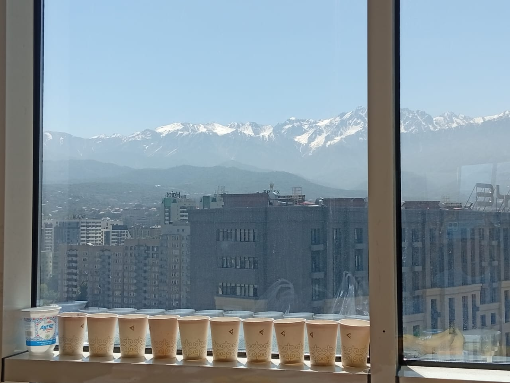
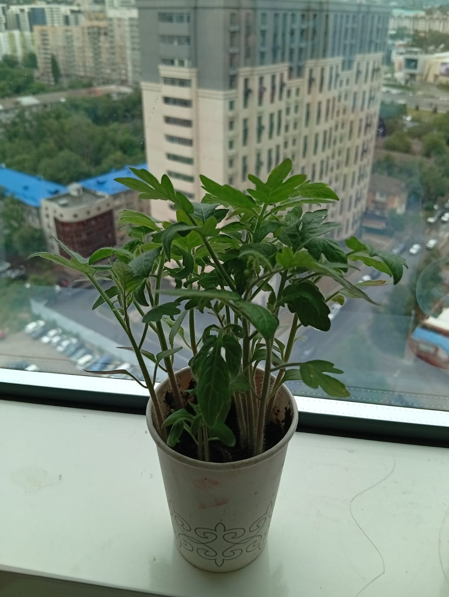
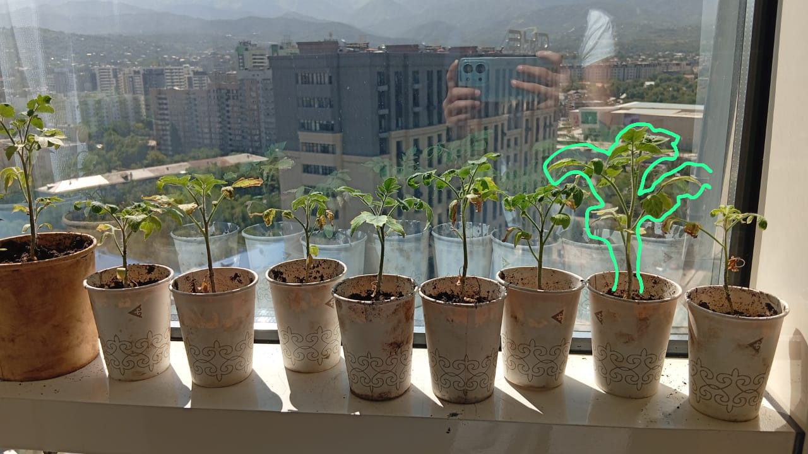
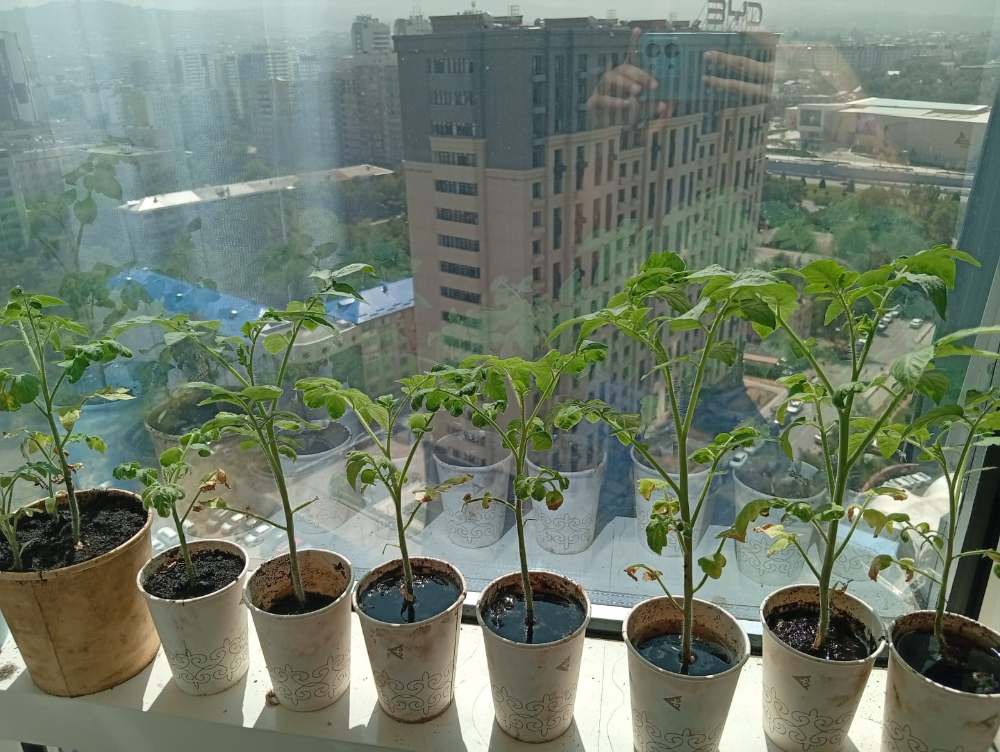
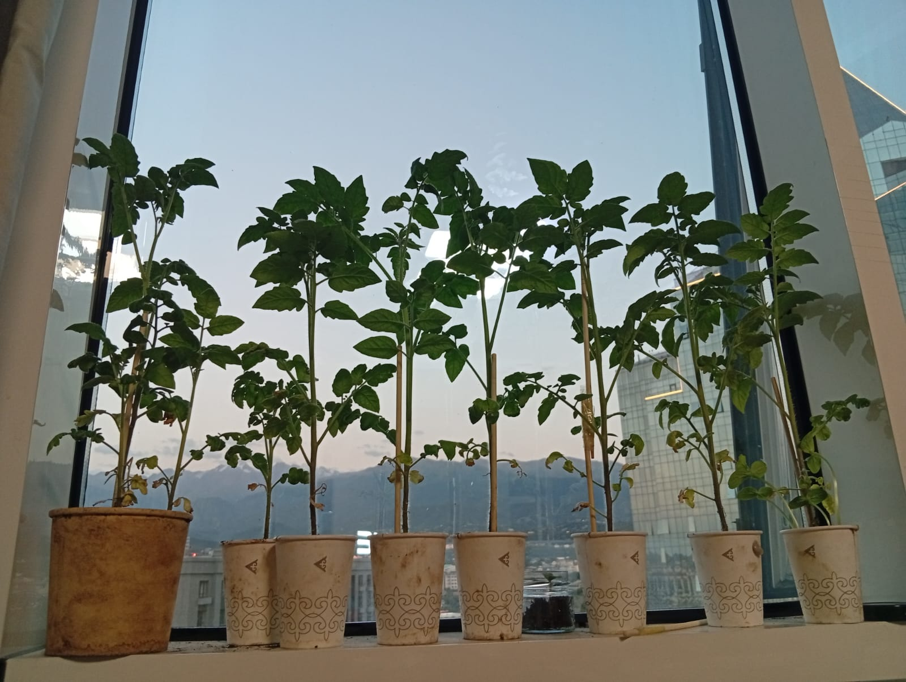
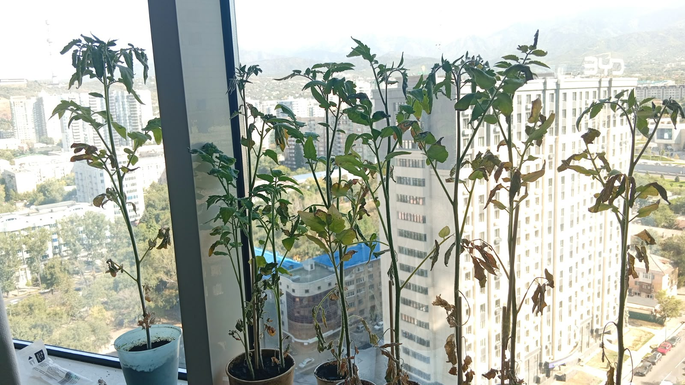
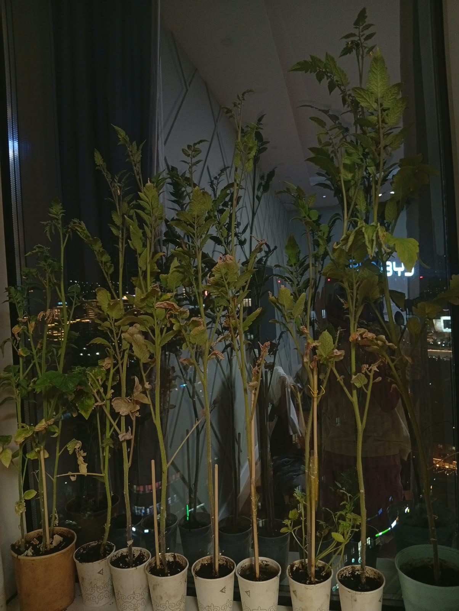
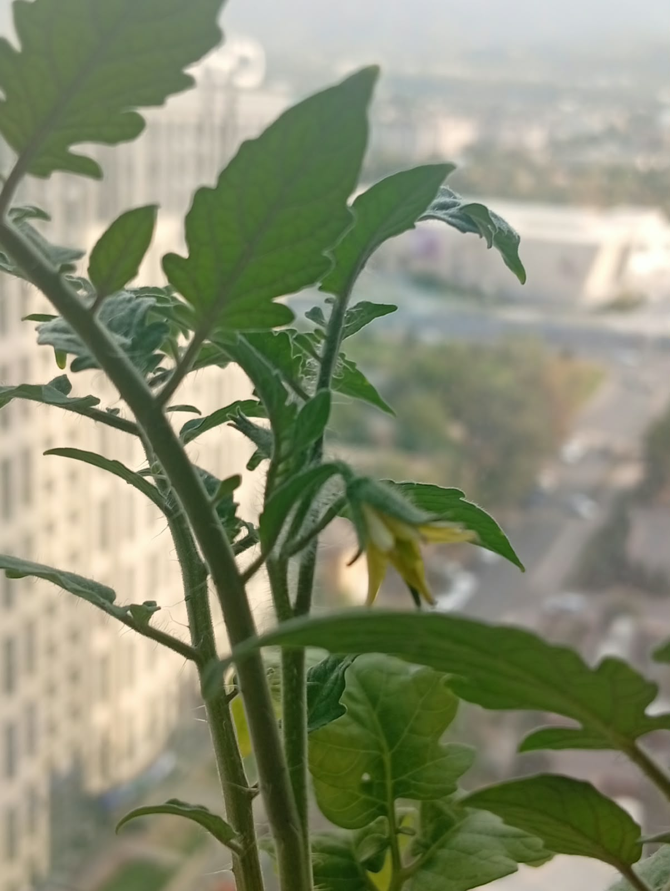
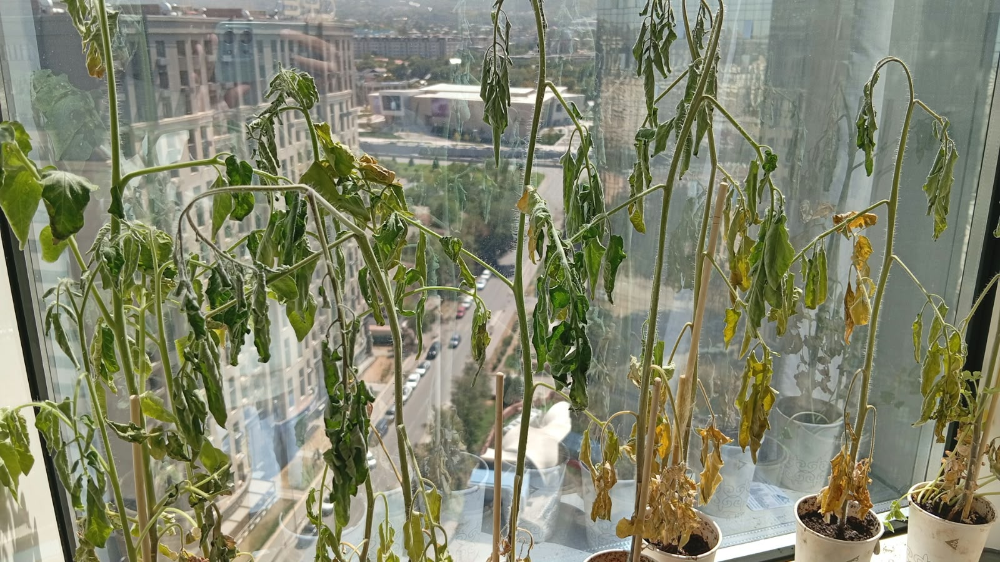

Day 1 - where our story was planted
water plant?

At first we were just getting to know each other, I still remember how you showed me your ESP32 humidity sensor on the first day — I was truly amazed Then we moved to Instagram and you sent me your first reels - Schrödinger's cat in a box and other wooooow videos there were lot o f sentences that you didnt understand because of my english and i didn t undestand yours too - ahahahahaha We didn't talk often at first, and then we didn't talk for a while at all But even then, every conversation with you felt so warm and special to me. I always loved talking to you. It always made me happy
water plant?

Then you suggested we make the humidity sensor thing again. We made a Spotify Blend together. We could talk about anything and everything.You made a running text with my name on the display - I kept thinking about it, it made me so happy. I loved listening to how your day went, what you learned during the week. I loved everything about it.You made a smiley face with "hi" on the display. We played chess. We taught each other a few words in our languages. We told each other things we never told anyone else - how you left to another city without telling your parents, and how you took apart your mom's bicycle.We discussed Suits, tried to watch it together on Rave. i found out hoy you look like ,i could see there only profile but i was shocked by how handsome you are ,i kept looking at your photo ,it gave me a feelin of delight and love inside. I discovered your amazing photography skill - I truly admired your photos. We talked about trains, and your childhood drawings of trains were so beautiful.I found out your real name, the first letter of your surname. We constantly asked each other questions. I was intersted in everything about you i was surprised when you told me your brothers and sisters.Everything was for the first time. It gave me so many emotions and indescribable feelings. I re-listened to your voice messages many times. I re-read your messages over and over.I was interested in everything about you - your MBTI, what you were doing, what you were learning, what you were photographing, what you were watching, what you were listening to, what you would do in a random situation.I still remember all those feelings. And I still keep them all in my heart
water plant?

We decided to chat for 3 days before the call. I was so nervous. We talked so, so well. And then the day of the call came - October 10th. I was at school at that time, and I immediately asked to leave my classes just to talk to you.You started so confidently, with so much energy. I was shy, I didn't know how I would speak. Even when I didn't understand all your sentences, even when I couldn't make my own - I was so happy to be on the call with you. I even loved our silence. I didn't know what to say because I didn't even hear what you said, and I was just like "bebebe" aahahahaha. When you started repeating after me, I felt some kind of connection.I loved your voice so much. I didn't understand everything, but I enjoyed just listening to you talk. We talked for so long on that call. I will never forget that wonderful day. When you said the word "yacht" and I didn't understand, when I was typing through the translator and you could hear that loud, funny typing sound 🤣And I also got your WhatsApp number and your surname that day that day my mother found out that i was talking to you amd asked me not to fall in love with you , i knew then that it was impossible
water plant?

Then we started talking a lot — every evening after school. Time with you flew so fast. I started to learn more about your character, how amazing and kind you are.You always had the best ideas — like creating websites. You sent your funny stickers and I collected all of them. You joked a lot and I adored your jokes. We finally played Asphalt together, and after that we talked late into the night. My mood always went up after talking to you.We started playing games till late, sitting on calls till midnight, thinking about what else we could play. You found Stumble Guys, there were always some new updates.I feel so warm from all these memories, from everything that was between us, from what we did. We shared stories, we talked, my happiness knew no limits.I looked at your notes from classes, at the photos of your exams. I loved and saved everything connected to you. I wanted this happiness to never end.I was in shock that we started talking in the middle of summer and our conversation lasted till January. In the first days of the new year we saw how each other looks. I loved that photo of you where your face is barely visible because of the street light. I loved the avatar you suggested I put as my profile picture.When I lost my phone, I was so scared that I would lose your number, that all the photos you sent would be gone, that our whole chat would be deleted. I was so happy when you started sending me your new photos again, sent all the dog stickers and your masterpieces again.You are my happiness.Do you remember we talked about the criteria for our future husband / wife? 😂 I will never forget the nights we didn't sleep till morning, when we scrolled our feeds together, you turned on screen sharing and I turned it on too just to see your face.Every time I was in a bad mood, I looked at your bright childhood photo.I was so worried about what to get you for your birthday, I wanted to know your address to order something for you.I still remember how your sister asked if you would date me — I was so surprised and my mood went so high. And how she wanted to give me her number so we could talk. I couldn't believe what was happening.I love your constant Halloween jokes, even your dirty ones.Do you remember that Peppa Pig photo of me? Then we started making memes of each other and counting who has more, who wins.When I first generated your photo on an elephant and other similar memes, I was always so scared to send you something.And how we played Truth or Dare late at night so often.I remember how shy I was to send you the video where you are dancing, but it was so funny — I rewatched it so many times and I wanted you to laugh too.Then we started sharing more childhood photos. I loved seeing how much you grew and changed. I felt such closeness from us telling each other everything, sending childhood photos, joking about each other, playing till late, doing things together, receiving your amazing photos.When something happened to you, my mood improved not just for a day, but in general — such a pleasant feeling in my soul.I was in shock that you guessed where I live. We had so much new.Everything you created, everything you learned made me incredibly happy. You are a huge source of energy. I feel happy from your messages, your photos, your memories, your answers, from information about you.I saw the city, the beauty of India through your eyes. I saw so much more than I saw in my other 13 years of life nd your first message when you wrote "I love you 🐦🔥 (in a friendly way)" — when you started writing me compliments. "You have such beautiful eyes 🌺" - my happiness knew no limits. At first I didn't believe it, but it felt so goodddd And after that, every time I looked in the mirror at my own eyes, I had such a warm memory of you I was also so happy that I could write you compliments, tell you about my feelings. And in this online chat, it's just the two of us - alone together i like itt i still remember april 1 st when you wrote to me that you like me when i answered that i adoree you, you decided not to say that it was joke , really thanksss it seems like it was almost just now and already become a memory most pleasant memories i ve ever had
water plant?

'CHAPTER 295 they were on a call at night, playing, then they finished playing. He shares with his photos as always And then he writes: "I’ve been clear in my head for a while. I like you, and I don’t want to keep this undefined anymore. Would you like to be my girlfriend??"She just froze. She thought maybe she was dreaming. She was in complete shock She wrote that she was worried about what she would tell her parents And he answered "Maybe this could be a secret between you and me".She was so surprised — she never thought he was thinking about this. She thought he saw her just as a friend She loved so much that he gave her time to think. It was unreal shock Even though she agreed, it wasn't completely decided because she said she was worried about it. On the next she said that she is not worried anymore and asked: "Am I your girlfriend now?" He replied: "I have a better question — Am I your boyfriend now?" And she answered, full of happiness — "yes you are😆'
water plant?

And from here all the most interesting things begin. All those memories, the games, the little moments — everything remains, it just became warmer, more comfortable with each other, and gradually the videos with hugs begin.A bunch of romantic compliments that lift your mood even more. The feeling when you can love a person, the feeling when it's mutual.All your support — I don't know how I would have managed without you. All your initiative, how you are always coming up with something, your compliments that you make with me. Your warm gestures. That you always understand me, that you raise my self-esteem by telling me that my cheeks are normal.Your incredible birthday website that I still open every single time, I learned everything there by heart, I loved everything so much.In the beginning everything was gradual, slow. Then we started to become closer and closer, to show more and more love. Our communication was still as warm and interesting, but now with the feeling that you can love this person — it's an incredibly pleasant feeling for me. I am so happy to this day.Then talks about hugs began — that we will definitely meet in real life. Then about kisses, questions like "then?" — what we would want to do together, for example kiss on the cheek, on the forehead and then we continue with "then?" We found out where each other's moles are. Calling each other honey, babe, dear, darling, sweetie — it's all so pleasant, these nicknames make me melt.Every evening laughing at your jokes, falling in love with you more and more, watching a movie together while you are painting walls.Right now, just from remembering, my heart is beating so fast and it takes my breath away, and back then it was so, so pleasant. Nothing could spoil the mood when you have such happiness.Our funny photos together and videos with our kiss. That we started to discuss more and more what if we were together, that we would want to sleep together, that we would want lazy cuddles. I remember I hugged a jacket stuffed with pillows, imagining it was you.Our weirdest thoughts.I am so happy, I adore you so much and every moment spent with you.'
water plant?

Look, our tomato has bloomed 🌸Our story grew from a tiny seed to flowers. But this is not the end.Flowers mean that fruits will come next - and ahead of us there is still so much love youuuu honeyy

even if "the plant" has dried up has with effort it can be brought back to life
dried
→
alive again
↓
even when it seems that the relationship has "dried up", with effort it can be restored.
🌱
and this little garden is still growing...